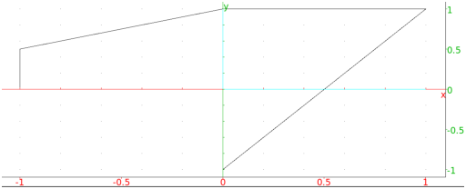
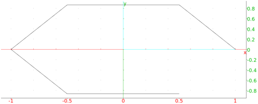

13.10.4 Polygonal lines in the plane: open_polygon
See Section 14.9.4 for polygonal lines in space.
The open_polygon command draws a polygonal path.
-
open_polygon takes an unspecified number of points:
points, a sequence or list of points.
- open_polygon(points)
returns and draws the polygon line with the
vertices given by the points.
Examples
-
Input:
open_polygon(-1,-1+i/2,i,1+i,-i)
Output:

- Input:
open_polygon(makelist(x->exp(i*pi*x/3),0,5,1))
Output:
